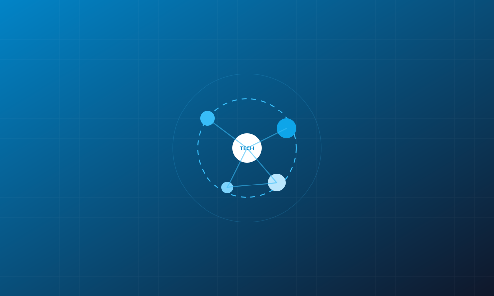

A technical community under Charutar Vidya Mandal University (CVMU), dedicated to enhancing technical knowledge, innovation, and practical skills among students.
Participate in hands-on workshops, coding activities, and seminars customized for skill development.
View EventsA platform to showcase creativity, present ideas, and collaborate on real-world problem-solving.
ExploreBridging the gap between theoretical subjects and practical industry expectations for holistic growth.
Learn More
The ISTE Student Chapter of A.D. Patel Institute of Technology (ADIT), under Charutar Vidya Mandal University (CVMU), is dedicated to enhancing technical knowledge and practical skills among students.
The club organizes workshops, seminars, coding events, and innovation-based activities to encourage creativity, collaboration, and technical growth.
Join the Community